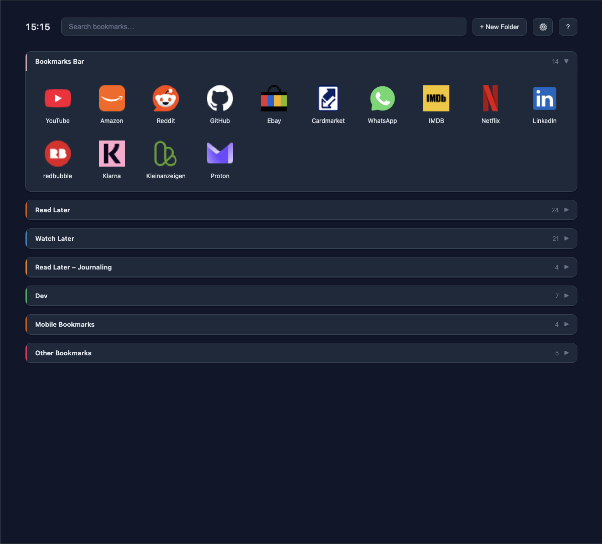

Dein neuer Tab. Alle deine Lesezeichen.
Jemals macht den neuen Tab in Deinem Browser zum übersichtlichen Dashboard für deine Lesezeichen: Ordner, Suche und Drag & Drop, alles lokal und ohne Konto.

Keine Einrichtung, kein Umzug
Jemals nutzt die ganz normalen Lesezeichen von Deinem Browser. Es gibt nichts zu importieren.
Neu anlegen wie gewohnt
Mit dem Stern in der Adressleiste oder mit Strg/Cmd+D. Neue Lesezeichen erscheinen im nächsten neuen Tab.
Gilt überall in Chrome
Was du in Jemals umbenennst, verschiebst oder löschst, gilt direkt in Deinem Browser, auch in der Lesezeichenleiste.
Nichts geht verloren
Deinstallierst du Jemals, bleiben alle Lesezeichen unverändert erhalten.
Was Jemals kann
Ordner als Dashboard
Immer ein Ordner ist offen, der Rest bleibt aufgeräumt. Unterordner erscheinen mit Pfad.
Drag & Drop
Lesezeichen und Ordner einfach umsortieren per drag&drop.
Schnelle Suche
Mit „/“ ins Suchfeld springen, mit „Esc“ leeren. Die Suchleiste bleibt beim Scrollen sichtbar.
Eigene Icons
Pro Lesezeichen ein eigenes Icon, sonst erscheinen farbige Initialen.
Zuletzt besucht
Optional die zehn jüngsten Websites. Per Drag & Drop wird daraus ein Lesezeichen.
Vier Themes, vier Sprachen
Hell, Slate, Warm und Schwarz. Deutsch, Englisch, Französisch und Spanisch.
Deine Daten bleiben bei dir
Jemals hat kein Konto, keine Server, keine Werbung und kein Tracking.
- Lesezeichen und Einstellungen bleiben lokal im Browser.
- Website-Icons kommen aus dem browser-eigenen eigenem Speicher. Es werden keine Adressen an Google oder andere Dienste gesendet.
- Den Verlauf liest Jemals nur, wenn du „Zuletzt besucht“ selbst einschaltest, und gibt die Berechtigung beim Ausschalten wieder ab.
- Der Quellcode ist offen (MIT-Lizenz).